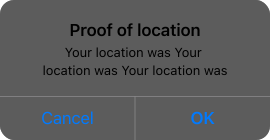

Интеграция с Telegram:
Что позволяет пользователям легко переходить между чатом и вашим приложением без установки дополнительных программ.
 Ton Support
Ton Support
Почему Telegram?
Telegram имеет большую пользовательскую базу по всему миру. Это означает, что наше приложение знакомств сразу получит доступ к широкой аудитории с минимальным количеством фейков.
Telegram имеет интуитивно понятный и удобный интерфейс, что снижает порог вхождения для пользователей. Интеграция приложения знакомств в уже привычную среду мессенджера делает его использование более естественным и удобным для пользователей.
 Security
Security
Безопасность и конфиденциальность
Telegram известен своей высокой степенью безопасности и конфиденциальности. Это важный аспект для приложения знакомств, где пользователи делятся личной информацией и взаимодействуют с другими людьми. А использование сквозного шифрование для секретных чатов и имеет функции самоуничтожающихся сообщений.
Telegram не заблокирован во многих странах, что позволяет вашему приложению быть доступным для пользователей по всему миру, увеличивая потенциал для роста и международного распространения.
Основные функции
Мы обеспечим Proof of Photo. Это важный аспект для приложения знакомств, где пользователи делятся личной информацией и взаимодействуют

Proof of photo
Приложение запрашивает у пользователя подтверждение его личности путем загрузки фотографии, сделанной в реальном времени. Загруженная фотография сравнивается с селфи фото пользователя, чтобы убедиться, что это один и тот
же человек.
Этапы проверки
- Выберите и загрузите свою фотографию
-
Сделай селфи
Повторите позу и жест.
-
Подождите, пока ваша фотография будет проверена.
Обычно это занимает 2-3 минуты.
-
Отличная работа!
Продолжайте настраивать свой профиль.Обычно это занимает 2-3 минуты.
Proof of location
После подтверждения, в профиле пользователя может отображаться его текущий город или район, что помогает другим пользователям лучше понимать, где находится их потенциальный партнер.
Proof of money
Инструмент, который позволяет подтвердить состоятельность пользователя, (не обязательный) служит для повышения рейтинга пользователя и делая его более привлекательным показывая его платежеспособность.

Готов к взлету?
Свяжитесь с нами
Запустить Farmloveили
Стать партнером
Будьте в курсе
Мы хотели бы оставаться на связи с вами. Если это чувство взаимно, подпишитесь на @farmlove в Твиттере, чтобы быть в курсе последних новостей и обновлений.

Помогите сформировать продукт
Множество лучших и ярких идей исходят от вас. Присоединяйтесь к нашему сообществу Discord, чтобы помочь создать будущее Farmlove.